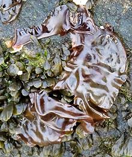
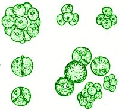

SAFARI
Users
- Brown Algae
- Red Algae
- Green Algae
- Lichen - a composite entity.
- Cyanobacteria - even though they are not algae.
Seaweeds were gathered from the shore by our pre-human ancestors for use as food, and we continue to eat them today. They provide important minerals, particularly iodine, which can be in short supply from other sources. Besides being eaten as vegetables, algae and cyanobacteria are major feedstocks for the food processing, dietary supplement and medicinal industries.
Very few sea vegetables are toxic, but some are. Cyanobacteria and single celled algae can be highly toxic, and increasingly infest our oceans due to climate change and human pollution.
Brown Algae
[Class Phaeophyceae]
of Division Ochrophyta of Superphylum Heterokonta (formerly Chromista) within Clade SAR within Domain Eukaryote The brown algae are quite different from other seaweeds, more closely related to diatoms, downy mildew and other single cell life forms (See Note-A2). They are multicellular, and do have oxygen generating chloroplasts, but of a different type than those of plants.Kelps
[Order Laminariales]
Here are found most of the multi-celled Brown Algae - the ones we can actually see without a microscope.
Laminariaceae FamilyThis large family of Kelps includes our most familiar seaweeds, particularly the giant kelp that litters our West Coast beaches after a storm. Kelps are of great economic, culinary and environmental importance. They provide shelter and breeding grounds for many animal species. They also have many uses in food processing, including manufacturing vegan "caviar" - and many are eaten fresh or dried.
Alariaceae FamilyThis is a relatively small family of Kelps, including only a few that are significant as food.
Lessoniaceae FamilyThis is a small family of Kelps, including only a few that are significant as food. Most are from around Japan, or western South America
|

 [Sea oak; Eisenia bicyclis]
[Sea oak; Eisenia bicyclis]
Bull Kelps & Saragassos
[Order Fucales]
Yet another Order within the Brown Algae. This one accounts for a huge tonnage, but not a whole lot of it is edible.
Hijiki[Hijiki, Hiziki (Japan); Nongmichae (Korea); Hai tso, Chiau tsai, Hai ti tun, Hai toe din, Hai tsao, Hoi tsou (China); Sargassum fusiforme] This seaweed is found along rocky coasts of China, Korea and Japan, and
is now cultivated along the coast of China and the Korean coast facing
China. Used as a sea vegetable in Japan, it was brought to North America by
the Michio Kushi Macrobiotic movement. It is imported from Japan, China and
Korea in dried form, and that is how it is generally used in Japan. It is
available in two forms: Leaf Form (Mé Hijiki) as shown in the photo,
and Wire Form (Naga Hijiki), which looks like a tangle of thin black wires.
For details see our Hijiki page.
Bladderwrack[Fucus vesiculosus of family Fucaceae]
This seaweed is found in the North Atlantic, both east and west
coasts, south to Morocco and North Carolina. It grows to about
35 inches long and 1 inch wide. Bladderwrack is used
mainly as a food flavoring and additive, and as a medicinal,
particularly for iodine deficiency and certain female problems.
Photo by Stemonitis distributed under license Creative
Commons
Attribution-ShareAlike 2.5 Generic..
Cochayuyo[Collofe (Mapuche); Durvillaea antarctica of family Durvillaeaceae]
This large Bull Kelp is the dominant seaweed off the shores of Chile
and New Zealand, and also found around southern Argentina and
Australia. It can grow to 32 feet long and has a honeycomb structure
for strength and flotation. In Chile, stems and fronds are sun dried
and later rehydrated for use in salads stews and soups.
Photo by franek2 distributed under license Creative
Commons
Attribution 3.0 Unported attribution required..
Sea Spaghetti[Himanthalia elongata of family Himanthaliaceae]
Native to the Baltic Sea, North Sea, and East Atlantic from Scandinavia
down to Portugal, this seaweed grows to about 7 feet. The stringy
fronds spawn, then decay in the late summer. New ones will sprout
in the second and third years. Sea Spaghetti has been used for food
for many years, in various dishes where its beefy or nutty flavors
are appreciated.
Photo by Baralloco distributed under license Creative
Commons
Attribution 3.0 Unported.
|
Red Algae
[Division Rhodophyta of clade Archaeplastida]
Red Algae (see Note-A3) is adapted to living at greater depth than green and brown algae, but not all do so. Its pigment reflects red light and absorbs blue, the color that penetrates deepest. Red algae are now widely accepted as plants - but only by the broadest definition of "plants", so acceptance isn't universal and is subject to change without notice.
Nori[Nori (Japan); Gim, Kim (Korea); Laver (Europe); Porphyra yezoensis and P. tenera, sometimes other species]
These Red Algae is farmed intensively in Japan, Korea and China. They
look just like the Laverbread in the next paragraph. Once harvested,
Nori is shredded and made up into paper-like sheets very much the way
handmade paper is made. These sheets are lightly toasted which turns
them green. They are used as a wrapping for sushi, as a garnish, as a
flavoring in soups, and seasoned for use as snacks. This important
seaweed now has its own page,
Nori / Gim / Kim
Laverbread [Laver, Laverbread (Wales, Scotland); Bara Lawr (Wales); Slake (Ireland); Porphyra umbilicalis] This Algae is best knonw in Wales, but is also harvested on the west coast of Scotland and the east coast of Ireland. It is used for making various forms of Laverbread. The Seaweed is havested at low tide, washed well, then boiled for hours until it becomes a stiff green paste. It is often mixed with oatmeal and fried. It is not farmed, but gathered wild Like other Red Algae it is high in protein, iron and iodine as well as
containing significant amounts of vitamins B2, A, D and C.
Photo by Rosser1954 distributed under license
Wikimedia Commons
Attribution Share-Alike v4.0 International.
Red Tosaka[Tosaka-nori (Japan); Jiguancai (China lit "cockscomb vegetable"); Meristotheca papulosa]
This Indo-West Pacific algae is popular in Japan as an appetizer or
salad and is also popular in Taiwan. Note that in Japan there are green
and white seaweeds also called "Tosaka" and similarly used.
Photo © i0086.
Irish Moss[Carrageen, Chondrus crispus] Found along the Atlantic coasts of North America and Europe in the intertidal and subtidal zones, this branching and generally reddish or purplish seaweed grows to about 9 inches long, It can turn green in strong sunlight. Similar species are found and harvested off Korea and Japan. Irish moss is harvested as a source of carrageenan. This substance is used as a thickener for soups and to make jellies. Industrially it is used as a thickener and stabilizer in ice cream, luncheon meats and other processed foods, and also for fining beer and wine. It has a long history of medicinal use in Europe as well. Irish moss is always harvested wild, with Canada the major
harvester at about 10,000 tons per year followed by France at about
1,260 tons per year.
Illustration from Koehler's Medicinal-Plants, copyright
expired.
|
Green Algae
[Division Chlorophyta of clade Archaeplastida]
Green Algae (see Note-A1) is now widely accepted as a plant, and more securely so than red algae. It is best known from the genus Ulva, Sea Lettuce or Green Laver. Sea lettuce species are sources of vitamins E, A, and B1, and are high in Iodine and other minerals (Ca, K, Mg, Na, Cu, Fe, Zn)
Sea Lettuce[Hai tsai (China lit. "Sea Vegetable"); Aosa (Japan); Ulva lactuca | see also Ulva intestinalis and Ulva clathrata (next paragraph)] Sea lettuce is found in tidal and near tidal seawater worldwide, generally anchored to rocks or other algae. It is eaten raw in salads and cooked in soups, particularly in Scandinavia, Great Britain, Ireland, China, and Japan. It is also eaten dried (see next paragraph) Sea lettuce is small, generally around 6 inches long but can grow to nearly 40 inches. It is almost transparently thin and consists of a single wide frond anchored at one point. It may be ruffled or somewhat divided, generally resembling the lettuce leaves after which it is named. U. lactuca is common worldwide in tropical and temperate regions, but is less common in arctic regions. Most sea lettuce is gathered wild as it grows prolifically wherever
there are sufficient nutrients, in both highly and moderately saline
waters, but some is farmed.
Photo by Kristian Peters licensed under
GNU Free Documentation License v1.2.
Sea Lettuce / Stone Hair[Tai Tyau (China, lit. "Stone Hair"); Bo-ao-nori (Japan, lit. "Green Nori") Ulva intestinalis and Ulva clathrata (both previously in genus Enteromorpha) | see also U. lactuca (above)] Stone Hair is often used dried in China, either rehydrated or ground to powder as a flavoring ingredient (Tai tyau feen). The photo specimen is U. intestinalis, but U. clathrata goes under the same Chinese name. These are long stringy species consisting of very thin walled tubes, but U. lactuca (see above) is also used dried. Conversely, these two species are also used fresh. All these species of Sea Lettuce are important to the Buddhist diet in China, both dried and fresh. U. intestinalis can grow to about 8 inches long, while
U. clathrata can grow to nearly 16 inches long. Both are
found worldwide, but U. intestinalis is much more common
in temperate regions than tropical, and ventures into the arctic.
U. clathrata is common in tropical and subtropical regions,
but is very scarce in subarctic regions.
Sea Grapes[Green Caviar; Latu Arusip, Ar-arosep, Arosep (Philippine); Latok (Malay); Umi-budo (Okinawa); Nho bien (Viet); Caulerpa lentillifera] This Indo-Pacific seaweed is common in tropical regions but less common in the subtropics and barely ventures into temperate regions at all. It is totally absent from the Atlantic. Sea Grape is now successfully farmed in the Philippines, where it is liked raw with vinegar as a snack, or in a salad with chopped onions, tomato and a dressing of fish sauce and vinegar. It is eaten similarly in Okinawa, Japan. Known to be high in iodine, it has a light pleasant seaweed flavor and a satisfying crunchiness when bitten. The stems are tough and stringy, but small and entirely tolerable (swallow them, you need more fiber anyway). The photo specimens were packed in salt,
sold at a local Philippine market for 2015 US $4.99 for a package
weighing about 4 ounces. About half the weight was in salt, but when
the seaweed is rinsed and re-hydrated it'll probably weigh about the
same. We have included our ubiquitous red kidney bean for scale.
Sponge Seaweed[Green sea fingers, Dead man's fingers. Oyster thief; Ch'onggak, Nokkakch'ae (Korea); Codium fragile] This coastal seaweed is a siphonous alga, meaning its round branches are composed of a tangle of near microscopic filaments, each filament being a single multinucleate cell. This accounts for its spongy texture. Its branching fronds grow up to about 12 inches long. Sponge seaweed is very common as a temperate Pacific species from
around Japan, but is also found along the Pacific coasts of Canada,
California and northern Mexico. Subspecies are found in the eastern
North Atlantic, but especially along the Atlantic coast of North
America, where it is a serious invasive. One subspecies grows around
Australia, New Zealand, South America, the southern tip of Africa,
and possibly as far south as Antarctica. Subspecies also exist in
small regions of the Mediterranean.
Details and Cooking.
Photo by Flyingdream contributed to the Public Domain
.
Chlorella [Chlorella vulgaris of class Trebouxiophyceae] This single celled algae was, in the 1940s and 1950s expected to, by now, be one of the most important food crops in the world. This did not happen for a number of reasons. Production proved far more expensive than expected, it proved entirely indigestible unless its cell walls were broken down by processing, it proved difficult to make anything from it that you'd actually want to eat, and methods were found to greatly improve output of conventional agricultural products. Today chlorella is sold mainly as a health food supplement. It has
been found effective at removing toxic heavy metals and dioxins from the
body. It is also thought effective for treating radiation poisoning,
reducing blood pressure and cholesterol, and improving immune function,
though these claims are not without contention, Drawing
of Chlorella regularis believed to be in the public domain.
|
Lichens
 Lichens are symbiotic composite organisms consisting of a fungus body
within which live either single cell algae or cyanobacteria. This
relationship, playing on the strengths of each, allows the organism to
live in extremely harsh environments, from arctic tundra to dry deserts
and on bare rock, though they are also abundant in temperate and
rainforest environments. Lichens are used as food by many cultures
around the world sometimes as a survival essential and sometimes as
a delicacy. Licnes now have their own
Lichens page so it can be shared
from here and from our Fungus page.
Lichens are symbiotic composite organisms consisting of a fungus body
within which live either single cell algae or cyanobacteria. This
relationship, playing on the strengths of each, allows the organism to
live in extremely harsh environments, from arctic tundra to dry deserts
and on bare rock, though they are also abundant in temperate and
rainforest environments. Lichens are used as food by many cultures
around the world sometimes as a survival essential and sometimes as
a delicacy. Licnes now have their own
Lichens page so it can be shared
from here and from our Fungus page.
Cyanobacteria
Cyanobacteria (see Note-A4) is an often blue-green bacteria, some varieties of which adhere to each other in long strands that mat together into a mass resembling algae. While some formerly dormant varieties are now causing problems with toxic blooms (due mainly to human pollution), we cannot be too resentful of them. Cyanobacteria are solely responsible for the oxygen in the atmosphere (Click on drawing for larger and more detailed illustration).
Originally they made oxygen all by themselves but now many live in the chloroplasts of plants and algae where they are the engine that actually generates the oxygen. Apparently some eukaryotes ingested cyanobacteria but found them indigestible. The cyanobacteria found the insides of the eukaryotes cozy and settled in. The several types of chloroplasts show this happened more than once.
Spirulina[Arthrospira] Spirulina is the commercial name for Arthrospira, a Cyanobacteria that forms into spiral threads that can be harvested as pond scum. Spirulina proper is a different bacteria and is not used for food. This algae was a significant nutrient for the Aztecs and still is for some African tribes, but its commercial potential has been overblown. Wild, unsupportable claims by health food purveyors have brought heavy fines in California, but the claims continue. This is not to say it is not nutritious, it is, containing a fairly balanced protein, many vitamins, minerals and nutritional pigments, as well as fatty acids The problem here is that all these nutrients can by obtained at much lower cost from other sources. Promoters haven't been able to get spirulina accepted as a general food either, because it looks bad, tastes bad and can be heavily contaminated with insects, copepods (tiny crustaceans) and worse - It's grown in open ponds. Spirulina has been promoted to ethical vegetarians as a source of
Vitamin B12, which they desire to get from non-animal sources (of
which there aren't any of useful concentration in nature). It does
contain a significant amount of a form of B12 not usable by the human
body, but any usable B12 in Spirulina appears to come from insect
and copepod contamination (animals, in other words). The more
contamination the more B12.
Photo by Joan Simon distributed under
license Creative Commons
Attribution-ShareAlike 3.0 Unported.
Fat Choy - Black Moss[Hair Moss, Sea Moss; (Fat Choy lit "Hair Vegetable"); Tóc tien tóc thieng (lit "Angel Hair"); Nostoc flagelliforme]
Not actually a moss, this land dwelling cyanobacteria forms long
strands that look like hair. It is harvested in the Gobi Desert and
the Qinghai Plateau, but harvesting has been restricted due to
resulting erosion. Due to increasing cost, sellers have responded in
the time honored Chinese way - by adulterating the product. Real Fat
Choy is dark green - the adulterant strands, made from starch, are
usually black. Real Fat Choy will stand up to over 30 minutes of
simmering, but adulterant strands will disintegrate.
Details and Cooking.
|
Links
- A1 - Green Algae - U.C. Berkeley.
- A2 - Chromistas - U.C. Berkeley.
- A3 - Red Algae - U.C. Berkeley.
- A4 - Cyanobacteria - U.C. Berkeley.